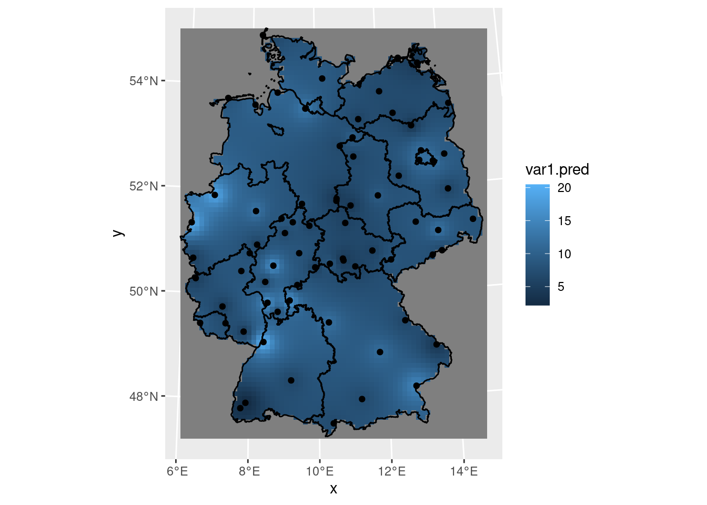
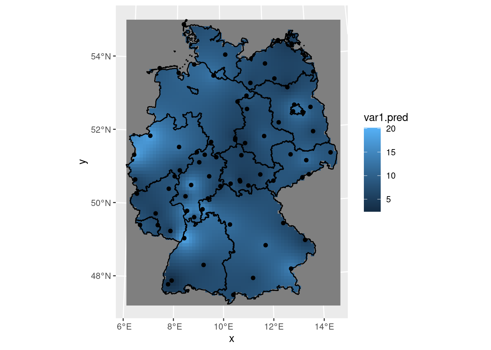
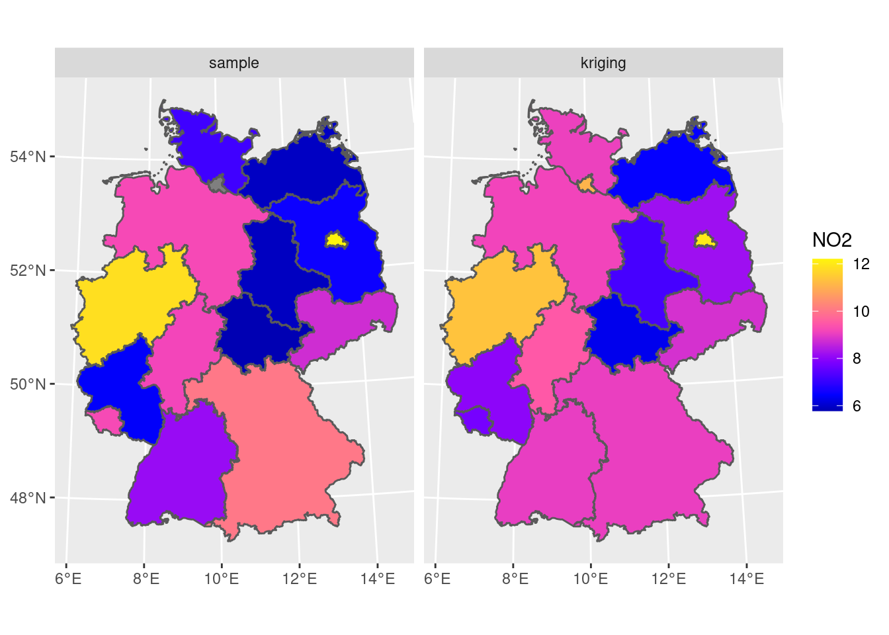
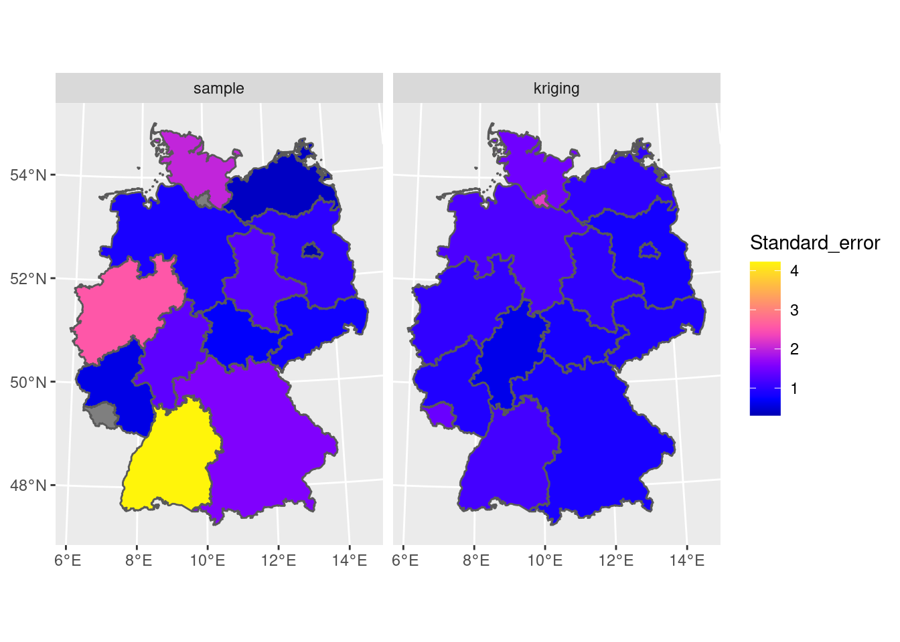
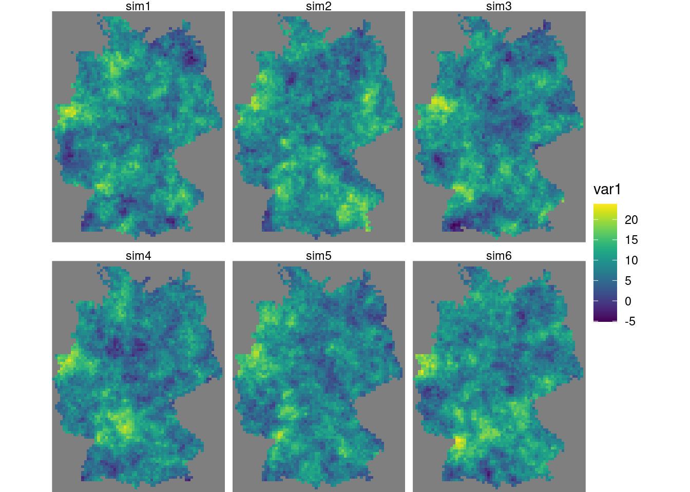
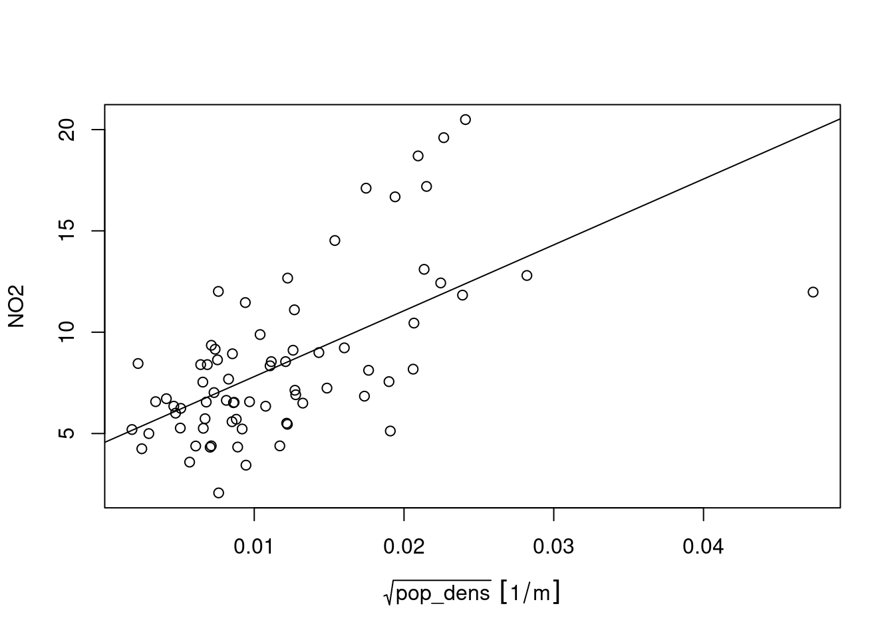
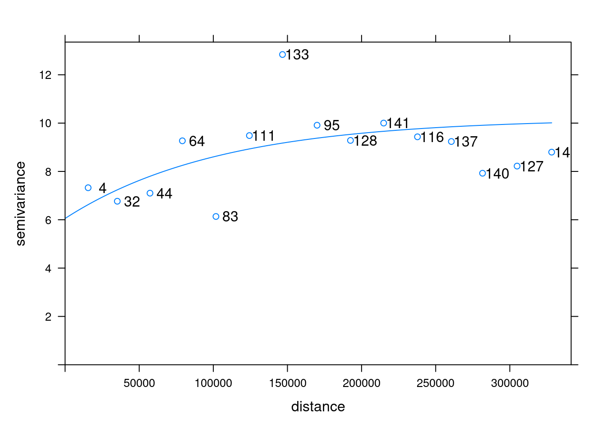
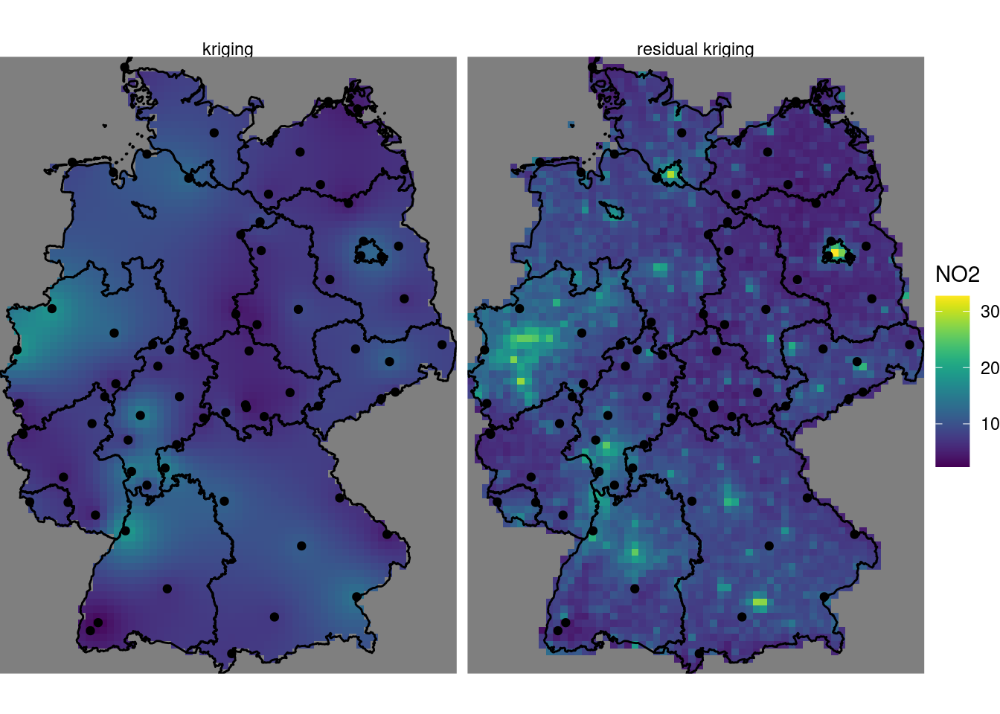

12 Spatial Interpolation
Spatial interpolation is the activity of estimating values spatially continuous variables for spatial locations where they have not been observed, based on observations. The statistical methodology for spatial interpolation, called geostatistics, is concerned with the modelling, prediction and simulation of spatially continuous phenomena. The typical problem is a missing value problem: we observe a property of a phenomenon \(Z(s)\) at a limited number of sample locations \(s_i, i = 1,...,n\), and are interested in the property value at all locations \(s_0\) covering an area of interest, so we have to predict it for unobserved locations. This is also called kriging, or Gaussian Process prediction. In case \(Z(s)\) contains a white noise component \(\epsilon\), as in \(Z(s)=S(s)+\epsilon(s)\) (possibly reflecting measurement error) an alternative but similar goal is to predict \(S(s)\), which may be called spatial filtering or smoothing.
In this chapter we will show simple approaches for handling geostatistical data, will demonstrate simple interpolation methods, explore modelling spatial correlation, spatial prediction and simulation. We will use package gstat (Pebesma and Graeler 2022; Pebesma 2004), which offers a fairly wide palette of models and options for non-Bayesian geostatistical analysis. Bayesian methods with R implementations are found in e.g. Diggle, Tawn, and Moyeed (1998), Diggle and Ribeiro Jr. (2007), Blangiardo and Cameletti (2015), and Wikle, Zammit-Mangion, and Cressie (2019). An overview and comparisons of methods for large datasets is given in Heaton et al. (2018).
12.1 A first dataset
We can read NO\(_2\) data, which is prepared in Chapter 13, from package gstat using
library(tidyverse)
no2 <- read_csv(system.file("external/no2.csv", package = "gstat"))and convert it into an sf object using
library(sf)
# Linking to GEOS 3.10.2, GDAL 3.4.3, PROJ 8.2.0; sf_use_s2() is TRUE
crs <- st_crs("EPSG:32632")
no2.sf <- st_as_sf(no2, coords = c("station_longitude_deg",
"station_latitude_deg"), crs = "OGC:CRS84") |>
st_transform(crs)Next, we can load country boundaries and plot these data using ggplot, shown in Figure 12.1 .
data(air, package = "spacetime") # loads boundaries into DE_NUTS1
de <- st_transform(st_as_sf(DE_NUTS1), crs)
# Loading required package: spggplot() + geom_sf(data = de) + geom_sf(data = no2.sf, mapping = aes(col = NO2))
If we want to interpolate, we first need to decide where. This is typically done on a regular grid covering the area of interest. Starting with the country outline de we can create a regular grid with 10 km grid cells (pixels) over Germany by
library(stars)
# Loading required package: abind
st_bbox(de) |>
st_as_stars(dx = 10000) |>
st_crop(de) -> grd
grd
# stars object with 2 dimensions and 1 attribute
# attribute(s):
# Min. 1st Qu. Median Mean 3rd Qu. Max. NA's
# values 0 0 0 0 0 0 2076
# dimension(s):
# from to offset delta refsys point values x/y
# x 1 65 280741 10000 WGS 84 / UTM z... NA NULL [x]
# y 1 87 6101239 -10000 WGS 84 / UTM z... NA NULL [y]Here, we chose grid cells to be not too fine, so that we still see them in plots.
Perhaps the simplest interpolation method is inverse distance weighted interpolation, which is a weighted average, using weights inverse proportional to distances from the interpolation location:
\[ \hat{z}(s_0) = \frac{\sum_{i=1}^{n} w_i z(s_i)}{\sum_{i=1}^n w_i} \]
with \(w_i = |s_0-s_i|^p\), and the inverse distance power typically taken as 2, or optimized using cross validation. We can compute inverse distance interpolated values using gstat::idw,
library(gstat)
i <- idw(NO2~1, no2.sf, grd)
# [inverse distance weighted interpolation]and plot them in Figure 12.2 .
ggplot() + geom_stars(data = i, aes(fill = var1.pred, x = x, y = y)) +
geom_sf(data = st_cast(de, "MULTILINESTRING")) +
geom_sf(data = no2.sf)
12.2 Sample variogram
In order to make spatial predictions using geostatistical methods, we first need to identify a model for the mean and for the spatial correlation. In the simplest model, \(Z(s) = m + e(s)\), the mean is an unknown constant \(m\), and in this case the spatial correlation can be modelled using the variogram, \(\gamma(h) = 0.5 E (Z(s)-Z(s+h))^2\). For processes with a finite variance \(C(0)\), the variogram is related to the covariogram or covariance function through \(\gamma(h) = C(0)-C(h)\).
The sample variogram is obtained by computing estimates of \(\gamma(h)\) for distance intervals, \(h_i = [h_{i,0},h_{i,1}]\):
\[ \hat{\gamma}(h_i) = \frac{1}{2N(h_i)}\sum_{j=1}^{N(h_i)}(z(s_i)-z(s_i+h'))^2, \ \ h_{i,0} \le h' < h_{i,1} \]
with \(N(h_i)\) the number of sample pairs available for distance interval \(h_i\). Function gstat::variogram computes sample variograms,
v <- variogram(NO2~1, no2.sf)and the result of plotting this is shown in Figure 12.3 .
plot(v, plot.numbers = TRUE)
Function variogram chooses default for maximum distance (cutoff: one third of the length of the bounding box diagonal) and (constant) interval widths (width: cutoff divided by 15). These defaults can be changed, e.g. by
library(gstat)
v0 <- variogram(NO2~1, no2.sf, cutoff = 100000, width = 10000)shown in Figure 12.4 .
plot(v0, plot.numbers = TRUE)
Note that the formula NO2~1 is used to select the variable of interest from the data file (NO2), and to specify the mean model: ~1 refers to an intercept-only (unknown, constant mean) model.
12.3 Fitting variogram models
In order to progress toward spatial predictions, we need a variogram model \(\gamma(h)\) for (potentially) all distances \(h\), rather than the set of estimates derived above: in case we would for instance connect these estimates with straight lines, or assume they reflect constant values over their respective distance intervals, this would lead to statistical models with non-positive covariance matrices, which is a complicated way of expressing that you are in a lot of trouble.
To avoid these troubles we fit parametric models \(\gamma(h)\) to the estimates \(\hat{\gamma}(h_i)\), where we take \(h_i\) as the mean value of all the \(h'\) values involved in estimating \(\hat{\gamma}(h_i)\). For this, when we fit a model like the exponential variogram, fitted by
v.m <- fit.variogram(v, vgm(1, "Exp", 50000, 1))and shown in Figure 12.5 .
plot(v, v.m, plot.numbers = TRUE)
The fitting is done by weighted least squares, minimizing \(\sum_{i=1}^{n}w_i(\gamma(h_i)-\hat{\gamma}(h_i))^2\), with \(w_i\) by default equal to \(N(h_i)/h^2\), other fitting schemes are available through argument fit.method.
12.4 Kriging interpolation
Typically, when we interpolate a variable, we do that on points on a regular grid covering the target area. We first create a stars object with a raster covering the target area, and NA’s outside it.
Kriging involves the prediction of \(Z(s_0)\) at arbitrary locations \(s_0\). We can krige NO\(_2\) by using gstat::krige, with the model for the trend, the data, the prediction grid, and the variogram model (Figure 12.6) :
k <- krige(NO2~1, no2.sf, grd, v.m)
# [using ordinary kriging]ggplot() + geom_stars(data = k, aes(fill = var1.pred, x = x, y = y)) +
geom_sf(data = st_cast(de, "MULTILINESTRING")) +
geom_sf(data = no2.sf) +
coord_sf(lims_method = "geometry_bbox")
12.5 Areal means: block kriging
Computing areal means can be done in several ways. The simples is to take the average of point samples falling inside the target polygons:
a <- aggregate(no2.sf["NO2"], by = de, FUN = mean)A more complicated way is to use block kriging (Journel and Huijbregts 1978), which uses all the data to estimate the mean of the variable over the target area. With krige, this can be done by giving the target areas (polygons) as the newdata argument:
b <- krige(NO2~1, no2.sf, de, v.m)
# [using ordinary kriging]we can now merge the two maps into a single object to create a single plot (Figure 12.7) :
b$sample <- a$NO2
b$kriging <- b$var1.predb |> select(sample, kriging) |>
pivot_longer(1:2, names_to = "var", values_to = "NO2") -> b2
b2$var <- factor(b2$var, levels = c("sample", "kriging"))
ggplot() + geom_sf(data = b2, mapping = aes(fill = NO2)) + facet_wrap(~var) +
scale_fill_gradientn(colors = sf.colors(20))
We see that the signal is similar, but that the simple means are more variable than the block kriging values; this may be due to the smoothing effect of kriging: data points outside the target area are weighted, too.
To compare the standard errors of means, for the sample mean we can get a rough guess of the standard error by \(\sqrt{(\sigma^2/n)}\):
SE <- function(x) sqrt(var(x)/length(x))
a <- aggregate(no2.sf["NO2"], de, SE)which would have been the actual estimate in design-based inference if the sample was obtained by spatially random sampling. The block kriging variance is the model-based estimate, and is a by-product of kriging. We combine and rename the two:
b$sample <- a$NO2
b$kriging <- sqrt(b$var1.var)b |> select(sample, kriging) |>
pivot_longer(1:2, names_to = "var",
values_to = "Standard_error") -> b2
b2$var <- factor(b2$var, levels = c("sample", "kriging"))
ggplot() +
geom_sf(data = b2, mapping = aes(fill = Standard_error)) +
facet_wrap(~var, as.table = FALSE) +
scale_fill_gradientn(colors = sf.colors(20))
where we see that the simple approach gives clearly more variability and mostly larger values for prediction errors of areal means, compared to block kriging.
12.6 Conditional simulation
In case one or more conditional realisation of the field \(Z(s)\) are needed rather than their conditional mean, we can obtain this by conditional simulation. A reason for wanting this may be the need to estimate areal mean values of \(g(Z(s))\) with \(g(\cdot)\) a non-linear function; a simple example is the areal fraction where \(Z(s)\) exceeds a threshold.
The standard approach used by gstat is to use the sequential simulation algorithm for this. This is a simple algorithm that randomly steps through the prediction locations and at each location:
- carries out a kriging prediction
- draws a random variable from the normal distribution with mean and variance equal to the kriging variance
- adds this value to the conditioning dataset
- finds a new random simulation location
until all locations have been visited.
This is carried out by gstat::krige when nsim is set to a positive value. In addition, it is good to constrain nmax, the (maximum) number of nearest neigbours to include in kriging estimation, because the dataset grows each step, leading otherwise quickly to very long computing times and large memory requirements (Figure 12.9):
s <- krige(NO2~1, no2.sf, grd, v.m, nmax = 30, nsim = 6)
# drawing 6 GLS realisations of beta...
# [using conditional Gaussian simulation]library(viridis)
g <- ggplot() + coord_equal() +
scale_fill_viridis() +
theme_void() +
scale_x_discrete(expand=c(0,0)) +
scale_y_discrete(expand=c(0,0))
g + geom_stars(data = s[,,,1:6]) + facet_wrap(~sample)
Alternative methods for conditional simulation have recently been added to gstat, and include krigeSimCE implementing the circular embedding method (Davies and Bryant 2013), and krigeSTSimTB implementing the turning bands method (Schlather 2011). These are of particular of interest for larger datasets or conditional simulations of spatiotemporal data.
12.7 Trend models
Kriging and conditional simulation, as used so far in this chapter, assume that all spatial variability is a random process, characterized by a spatial covariance model. In case we have other variables that are meaningfully correlated with the target variable, we can use them in a linear regression model for the trend,
\[ Z(s) = \sum_{j=0}^p \beta_j X_p(s) + e(s) \]
with \(X_0(s) = 1\) and \(\beta_0\) an intercept, but with the other \(\beta_j\) regression coefficients. This typically reduces both the spatial correlation in the residual \(e(s)\), as well as its variance, and leads to more accurate predictions and more similar conditional simulations.
A population grid
As a potential predictor for NO2 in the air, we use population density. NO2 is mostly caused by traffic, and traffic is stronger in more densely populated areas. Population density is obtained from the 2011 census, and is downloaded as a csv file with the number of inhabitants per 100 m grid cell. We can aggregate these data to the target grid cells by summing the inhabitants:
v <- vroom::vroom("aq/pop/Zensus_Bevoelkerung_100m-Gitter.csv")
v |> filter(Einwohner > 0) |>
select(-Gitter_ID_100m) |>
st_as_sf(coords = c("x_mp_100m", "y_mp_100m"), crs = 3035) |>
st_transform(st_crs(grd)) -> b
a <- aggregate(b, st_as_sf(grd, na.rm = FALSE), sum)Now we have the population counts per grid cell in a. To get to population density, we need to find the area of each cell; for cells crossing the country border, this will be less than 10 x 10 km:
grd$ID <- 1:prod(dim(grd)) # to find out which grid cell we have
ii <- st_intersects(grd["ID"],
st_cast(st_union(de), "MULTILINESTRING"))
# Warning in st_intersects.stars(grd["ID"], st_cast(st_union(de),
# "MULTILINESTRING")): as_points is NA: assuming here that raster
# cells are small polygons, not points
grd_sf <- st_as_sf(grd["ID"], na.rm = FALSE)[lengths(ii) > 0,]
iii <- st_intersection(grd_sf, st_union(de))
# Warning: attribute variables are assumed to be spatially constant
# throughout all geometries
grd$area <- st_area(grd)[[1]] + units::set_units(grd$values, m^2)
grd$area[iii$ID] <- st_area(iii)Instead of doing the two-stage procedure above: first finding cells that have a border crossing it, then computing its area, we could also directly use st_intersection on all cells, but that takes considerably longer. From the counts and areas we can compute densities, and verify totals (Figure 12.10) :
grd$pop_dens <- a$Einwohner / grd$area
sum(grd$pop_dens * grd$area, na.rm = TRUE) # verify
# 80323301 [1]
sum(b$Einwohner)
# [1] 80324282g + geom_stars(data = grd, aes(fill = sqrt(pop_dens), x = x, y = y))
We need to divide the number of inhabitants by the number of 100 m grid points contributing to it, in order to convert population counts into population density.
To obtain population density values at monitoring network stations, we can use
(a <- aggregate(grd["pop_dens"], no2.sf, mean))
# stars object with 1 dimensions and 1 attribute
# attribute(s):
# Min. 1st Qu. Median Mean 3rd Qu.
# pop_dens [1/m^2] 3.37e-06 4.98e-05 8.93e-05 0.000195 0.000237
# Max. NA's
# pop_dens [1/m^2] 0.00224 1
# dimension(s):
# from to offset delta refsys point
# geometry 1 74 NA NA WGS 84 / UTM z... TRUE
# values
# geometry POINT (545414 5930802),...,POINT (835252 5630738)
no2.sf$pop_dens <- st_as_sf(a)[[1]]
summary(lm(NO2~sqrt(pop_dens), no2.sf))
#
# Call:
# lm(formula = NO2 ~ sqrt(pop_dens), data = no2.sf)
#
# Residuals:
# Min 1Q Median 3Q Max
# -7.96 -2.15 -0.50 1.60 8.10
#
# Coefficients:
# Estimate Std. Error t value Pr(>|t|)
# (Intercept) 4.561 0.697 6.54 8.0e-09 ***
# sqrt(pop_dens) 325.006 49.927 6.51 9.2e-09 ***
# ---
# Signif. codes: 0 '***' 0.001 '**' 0.01 '*' 0.05 '.' 0.1 ' ' 1
#
# Residual standard error: 3.15 on 71 degrees of freedom
# (1 observation deleted due to missingness)
# Multiple R-squared: 0.374, Adjusted R-squared: 0.365
# F-statistic: 42.4 on 1 and 71 DF, p-value: 9.19e-09and the corresponding scatterplot is shown in Figure 12.11.
plot(NO2 ~ sqrt(pop_dens), no2.sf)
abline(lm(NO2 ~ sqrt(pop_dens), no2.sf))
Prediction under this new model involves first modelling a residual variogram (Figure 12.12) :
no2.sf <- no2.sf[!is.na(no2.sf$pop_dens),]
vr <- variogram(NO2~sqrt(pop_dens), no2.sf)
vr.m <- fit.variogram(vr, vgm(1, "Exp", 50000, 1))plot(vr, vr.m, plot.numbers = TRUE)
and subsequently, kriging prediction is done by (Figure 12.13)
kr <- krige(NO2 ~ sqrt(pop_dens), no2.sf, grd["pop_dens"], vr.m)
# [using universal kriging]
k$kr1 <- k$var1.pred
k$kr2 <- kr$var1.pred
st_redimension(k[c("kr1", "kr2")],
along = list(what = c("kriging", "residual kriging"))) |>
setNames("NO2") -> kmg + geom_stars(data = km, aes(fill = NO2, x = x, y = y)) +
geom_sf(data = st_cast(de, "MULTILINESTRING")) +
geom_sf(data = no2.sf) + facet_wrap(~what) +
coord_sf(lims_method = "geometry_bbox")
# Coordinate system already present. Adding new coordinate system, which will replace the existing one.
where, critically, the pop_dens values are now available for prediction locations in object grd. We see some clear differences: the map with population density in the trend follows the extremes of the population density rather than those of the measurement stations, and has a range that extends that of the former. It should be taken with a large grain of salt however, since the stations used were filtered for the category “rural background”, indicating that they represent conditions of lower populations density. The scatter plot of Figure 12.11 reveals that the the population density at the locations of stations is much more limited than that in the population density map, and hence the right-hand side map is based on strongly extrapolating the relationship shown in Figure 12.11.
12.8 Exercises
- Create a plot like the one in Figure 12.13 that has the inverse distance interpolated map of Figure 12.2 added on left side.
- Create a scatter plot of the map values of the idw and kriging map, and a scatter plot of map values of idw and residual kriging.
- Carry out a block kriging, predicting block averages for blocks centered over grid cells, by setting the
blockargument inkrige(), and do this for block sizes of 10 km (the grid cell size), 50 km and 200 km. Compare the resulting maps of estimates for these three blocks sizes with those obtained by point kriging, and do the same thing for all associated kriging standard errors. - Based on the residual kriging results obtained above, compute maps of the lower and upper boundary of a 95% confidence interval, when assuming that the kriging error is normally distributed, and show them in a plot with a single (joint) legend
- Compute and show the map with the probabilities that NO2 point values exceed the level of 15 ppm, assuming normally distributed kriging errors.